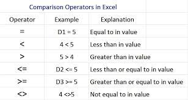
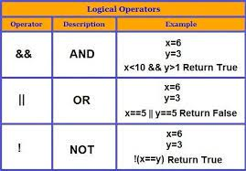

The < (less than), > (greater than), <= (less than or equal), and >= (greater than or equal) comparison, also known as relational, operators compare their operands. Those operators are supported by all integral and floating-point numeric types
Overview. A logical operator is a symbol or word used to connect two or more expressions such that the value of the compound expression produced depends only on that of the original expressions and on the meaning of the operator. Common logical operators include AND, OR, and NOT.
